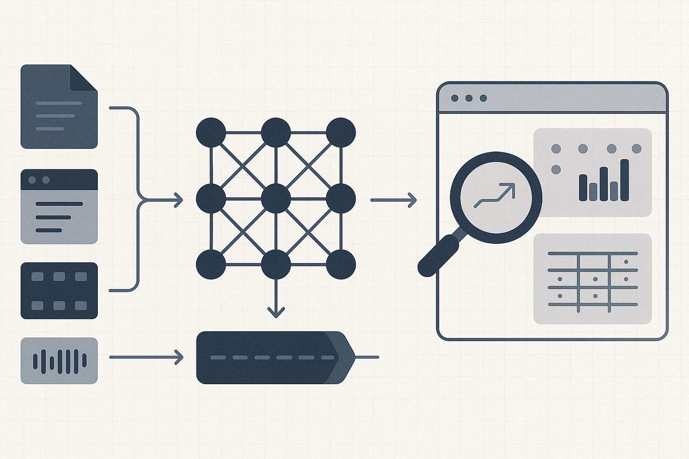

Our Vision
Open Research Tools (openresearchtools.com) is a community-driven, open-source platform that connects researchers and standardises how unstructured material such as video, audio, web content and scholarly articles are discovered, converted and analysed. Our aim is simple but ambitious: to bridge the gap between qualitative and quantitative data making it searchable, comparable and quantifiable using advanced research methods, so researchers can generate defensible insights into psychology, human behaviour, and wider sociological and economic questions.
